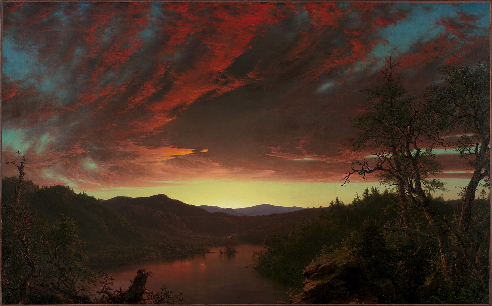
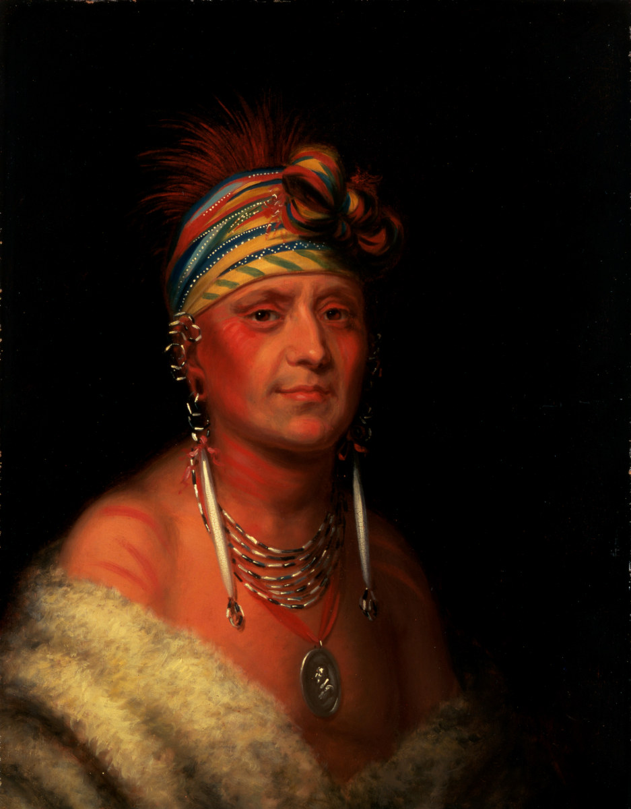
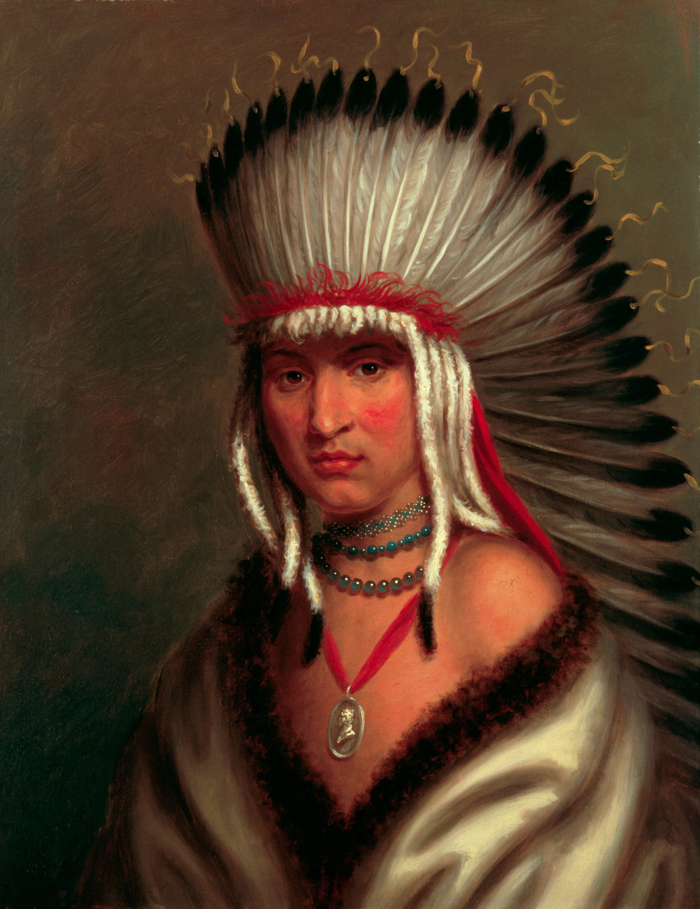
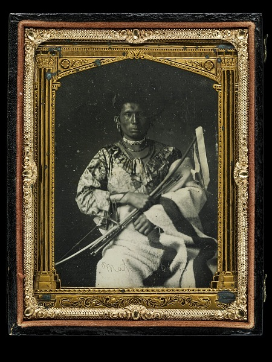
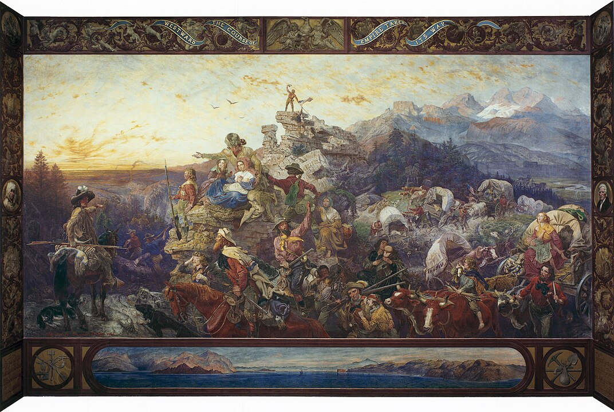

Art, Photography, and the American Imagination, 1840–1910
HIST 101 • Richland Community College
Part I: Landscapes
Nature as National Destiny
Thomas Cole, The Oxbow, 1836

Frederic Church, Twilight in the Wilderness, 1860
Albert Bierstadt, The Rocky Mountains, Lander's Peak, 1863
Part II: Indigenous Portraiture
Noble Figures From a "Distant" World
Charles Bird King
Who he was: Washington D.C.-based portrait painter (1785-1862)
His major project: Painted Native American delegations visiting Washington for treaty negotiations in the 1820s-1830s
Where his work appeared: Commissioned by the U.S. government's "Indian Gallery" in the War Department
What makes his work significant: Created some of the most widely circulated images of Native leaders—but painted them as diplomats passing through rather than nations persisting
The tension: His subjects were active political leaders negotiating treaties, yet King's style often suggested they were figures from a disappearing world

Charles Bird King, Monchousia, 1820s

Charles Bird King, Petalesharro (Generous Chief), Pawnee, 1820s
Charles Bird King, Hayne Hudjihini (Eagle of Delight), Oto, 1820s
George Catlin
Who he was: American painter and traveler (1796-1872)
His mission (in his own words): "rescuing from oblivion the looks and customs of the vanishing races of native man in America"
His subjects: Traveled extensively through the Great Plains in the 1830s, painting Mandans, Hidatsas, Blackfeet, Crows, and dozens of other Native nations—over 500 paintings total
His "Indian Gallery": Toured his collection throughout the U.S. and Europe, promoting it as a record of peoples "hastening before the approach and certain progress of civilization"
The contradiction: In the 1830s, he documented living cultures—but framed them through the lens of inevitable disappearance
His legacy: Created invaluable visual records, but also popularized the "vanishing race" narrative that denied Native agency and survival
George Catlin's Indian Portraits: Authentic or Staged?
The Reality: More nuanced than simple misrepresentation
What Catlin Actually Painted (1830s): In this decade, Plains tribes like the Mandans, Hidatsas, Blackfeet, and Crows were still largely living their traditional lifeways. The ceremonial regalia, buffalo-skin lodges, and traditional dress were genuinely part of their active, living cultures—not reconstructions or costumes.
The Staging Element: Catlin did ask subjects to wear their finest ceremonial clothing for portraits, which wasn't everyday wear. He was selective, emphasizing the "exotic" and ceremonial over the mundane—like asking someone to dress up for a formal portrait rather than wearing work clothes.
The Real Problem: The misrepresentation came in how his work was used and interpreted. Catlin promoted the "vanishing race" narrative—claiming Native peoples were inevitably disappearing and he was creating a last record. This ignored Native agency, adaptation, and survival. His touring "Indian Gallery" (1840s-1850s) played up romantic primitivism for white audiences.
Bottom Line: In the 1830s, Catlin documented actual living cultures, but through a selective, romanticizing lens that served his own narrative purposes and white expectations.
George Catlin, White Cloud, Head Chief of the Iowas, 1844-45
George Catlin, Buffalo Bull's Back Fat, Head Chief, Blood Tribe, 1832
George Catlin, Sha-có-pay (The Six), Chief of the Plains Ojibwa, 1832
George Catlin, Buffalo Chase, A Single Death, 1832-33
Part III: Daguerreotypes of Native Leaders
Photography's "Truth"
Daguerreotypes of Native Leaders (1850s): Photography's "Truth"
The daguerreotype: Early photography popular in the 1840s-1850s, widely believed to be an "unfiltered truth machine"—"The camera cannot lie"
The reality: The camera lies all the time
Native leaders in Washington, D.C. studios:
Subjects sat stiffly in clothing often chosen by the studio, not themselves
Backgrounds were curtains—context removed
Chiefs negotiating treaties shown as anonymous figures of "Indianness"—timeless and abstract
What's missing: No hint of Congressional debates, Native newspapers, or complex political strategies unfolding across the Great Plains and Southwest
The paradox: Photography feels factual, but it erases history. The photograph freezes a person in a moment that implies permanence—stripping away politics and modernity
The pattern emerging: Landscapes with no Native presence + portraits suggesting an older world + photographs stripping away politics = a systematic erasure

Native American daguerreotype, 1850s
Keokuk, Sauk leader, daguerreotype 1847
Native American daguerreotype, Carter collection
Native American daguerreotype, mid-19th century
Native American daguerreotype, 1850s
Photography's Cultural Power
By the 1860s-1870s: Photographers like Mathew Brady, Southworth & Hawes, and Timothy O'Sullivan taught Americans that photographs were windows onto reality
The shift: Photographs became data, evidence, proof
The belief: What the camera framed became what people believed
The impact: This conviction—which we still carry today—made photographic portrayals of the West immensely influential
Setting the stage: With this power established, images could shape not just perception, but policy and action
Photography's "Objective" Lie
The myth of "mechanical truth": Photography was believed to capture reality without bias or interpretation
The reality: Every photograph involves choices
Photographer chooses framing
Photographer chooses timing
Photographer chooses subjects
Photographer chooses what to include—and what to exclude
The danger: Photography claimed authority without accountability—people believed they were seeing "truth" when they were actually seeing the photographer's vision
The impact on the West: Photographic "evidence" of Indigenous peoples as timeless, disappearing figures became accepted as fact rather than interpretation
Part IV: Frontiersmen
The West Has New Protagonists
Frontiersmen: The West Has New Protagonists
New characters enter the visual narrative: White settlers
Key artists and works:
George Caleb Bingham's "Daniel Boone Escorting Settlers"
William Ranney's trail scenes
C.C.A. Christensen's homesteading idylls
What these scenes communicate:
The land welcomes them
The atmosphere feels ordained
Almost never a sense of conflict
Settlers look modern, purposeful, and future-facing
The contrast with earlier images: If Indigenous people were isolated in elegiac stasis, these paintings give settlers dynamism—movement, narrative, destiny
The pattern now complete:
The land appears empty
Indigenous people appear frozen in time
Settlers appear to inherit the future

Emanuel Leutze, Westward the Course of Empire Takes Its Way, 1861
Jasper Francis Cropsey, Autumn on the Hudson River, 1860
Part V: Edward Curtis and the Invention of Disappearance
Edward Curtis and the Invention of Disappearance
Curtis enters the scene (1890s-1910s): Gathered the visual habits Americans had absorbed over seventy years
His methods:
Staged scenes using older clothing
Removed signs of modern life—clocks, wagons, fences, sewing machines, metal tools
Retouched photographs to erase evidence of Native modernity
His most famous image:The Vanishing Race
The revelation: Everything we've been noticing had a cultural destination
The pattern revealed:
Earlier landscapes, portraits, and daguerreotypes weren't random
They prepared Americans to believe Indigenous peoples were fading away—relics of premodern time
Curtis didn't invent this idea; he crystallized it, aestheticized it, and marketed it in twenty volumes
The concept: Historians call this entire tradition the Myth of the Vanishing Indian
By the 1890s-early 1900s, Indigenous nations were:
Forming political organizations
Publishing newspapers
Fighting court cases over land and sovereignty
Sending children to tribal-run schools
Creating new art forms
Blending traditional governance with new strategies
Wearing both traditional and modern clothing
Shaping pan-tribal movements
The truth: Curtis's world is not a record of Indigenous society—it is a record of his own imagination
The reality: Reservation-era life was complex, creative, adaptive, and fiercely modern
What Curtis Refused to Photograph
Reservation confinement (1870s-1920s):
Poverty, disease, ration systems
Federal control of every aspect of life
Forced assimilation policies
Indigenous people living in modernity:
Adaptation, not disappearance
Mixed economies, new technologies
Maintaining identity while changing
Fighting for sovereignty through law and politics
Curtis's erasure: He deliberately removed all evidence of this complex, modern reality to create his fantasy of timeless, disappearing peoples
The "Vanishing Race" Never Vanished
Today:
574 federally recognized tribes in the U.S.
Millions of Indigenous people thriving
Languages, cultures, sovereignty ongoing
Political movements, cultural revitalization, legal victories
What actually vanished: Not Indigenous nations—but the ability of many Americans to imagine them as modern, political, creative peoples
The lesson: Images don't just reflect reality—they shape what people become capable of believing
Conclusion: Seeing the West Again
Conclusion: Seeing the West Again
What the Images Did:
Landscapes made the continent look empty
Portraits made Native people look timeless
Daguerreotypes made them look frozen outside history
Frontier paintings made settlers look like the rightful heirs
Curtis gave the entire system a name: The Vanishing Race
The Truth: Indigenous nations did not vanish. What vanished was the ability of many 19th-century Americans to imagine them as modern, political, creative nations.
The Lesson: Images shape imagination—and imagination shapes history.
The Question: How do images shape what a nation becomes capable of believing?
.jpg)


{kind=link}
.jpg)